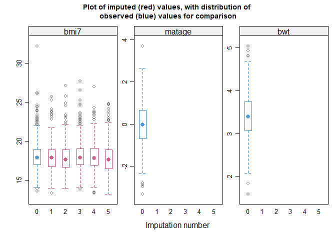

Overview
The Multiple Imputation DOCtor (midoc) R package is a guidance system for analysis with missing data. It incorporates expert, up-to-date methodology to help you choose the most appropriate analysis method when there are missing data. By examining the available data and the assumed causal structure, midoc will advise whether multiple imputation is needed, and if so, how best to perform it.
descMissDatalists missing data patterns in the specified datasetexploreDAGcompares the relationships in the available data with the proposed DAGcheckCRAchecks complete records analysis is valid under the proposed analysis modelcheckMIchecks multiple imputation is valid under the proposed imputation modelcheckModSpecexplores the parametric specification of the imputation modelproposeMIsuggests multiple imputation options based on the available data and specified imputation modeldoMImiceperforms multiple imputation based on theproposeMIoptions
You can learn more about these commands in vignette("midoc","midoc").
Installation
You can install the development version of midoc from GitHub with:
# install.packages("devtools")
devtools::install_github("elliecurnow/midoc")Usage
library(midoc)
head(bmi)
#> bmi7 matage mated pregsize bwt r
#> 1 15.16444 -1.30048035 0 0 3.287754 1
#> 2 18.00250 -0.33689915 0 0 3.770346 1
#> 3 NA -0.22673432 0 1 3.022161 0
#> 4 NA 0.81459107 1 0 3.103251 0
#> 5 17.97791 -0.55260086 0 0 3.830381 1
#> 6 NA -0.03829346 1 0 2.775282 0
descMissData(y="bmi7", covs="matage mated", data=bmi, plot=TRUE)
exploreDAG(mdag=" matage -> bmi7
mated -> matage
mated -> bmi7
sep_unmeas -> mated
sep_unmeas -> r
pregsize -> bmi7
pregsize -> bwt
sep_unmeas -> bwt",
data=bmi)
#> The proposed directed acyclic graph (DAG) implies that the following
#> pairs of variables are independent, or conditionally independent. 'X
#> _||_ Y | Z' should be read as 'X is independent of Y conditional on Z'.
#> Note that variable names are abbreviated:
#>
#> bmi7 _||_ bwt | prgs, sp_n
#> bmi7 _||_ bwt | matd, prgs
#> bmi7 _||_ r | sp_n
#> bmi7 _||_ r | matd
#> bmi7 _||_ sp_n | matd
#> bwt _||_ matg | matd
#> bwt _||_ matg | sp_n
#> bwt _||_ matd | sp_n
#> bwt _||_ r | sp_n
#> matg _||_ prgs
#> matg _||_ r | sp_n
#> matg _||_ r | matd
#> matg _||_ sp_n | matd
#> matd _||_ prgs
#> matd _||_ r | sp_n
#> prgs _||_ r
#> prgs _||_ sp_n
#>
#> These (conditional) independence statements are explored below using
#> the canonical correlations approach for mixed data. See
#> ??dagitty::localTests for further details.
#>
#> Results are shown for variables that are fully observed in the
#> specified dataset.
#> The null hypothesis is that the stated variables are (conditionally)
#> independent.
#>
#> estimate p.value 2.5% 97.5%
#> bwt _||_ matage | mated 0.05018898 0.1127099 -0.01184095 0.11183410
#> matage _||_ pregsize 0.03029139 0.3386080 -0.03176134 0.09211150
#> matage _||_ r | mated 0.02998323 0.3435470 -0.03206946 0.09180567
#> mated _||_ pregsize 0.01594976 0.6144181 -0.04608889 0.07786585
#> pregsize _||_ r 0.01482015 0.6397174 -0.04721631 0.07674273
#>
#> Interpretation: A small p-value means the stated variables may not be
#> (conditionally) independent in the specified dataset: your data may not
#> be consistent with the proposed DAG. A large p-value means there is
#> little evidence of inconsistency between your data and the proposed DAG.
#>
#> Note that these results assume that relationships between variables are
#> linear. Consider exploring the specification of each relationship in
#> your model. Also consider whether it is valid and possible to explore
#> relationships between partially observed variables using the observed
#> data, e.g. avoiding perfect prediction.
checkCRA(y="bmi7", covs="matage mated", r_cra="r",
mdag=" matage -> bmi7
mated -> matage
mated -> bmi7
sep_unmeas -> mated
sep_unmeas -> r
pregsize -> bmi7
pregsize -> bwt
sep_unmeas -> bwt")
#> Based on the proposed directed acyclic graph (DAG), the analysis model
#> outcome and complete record indicator are independent given analysis
#> model covariates. Hence, complete records analysis is valid.
checkMI(dep="bmi7", preds="matage mated pregsize", r_dep="r",
mdag=" matage -> bmi7
mated -> matage
mated -> bmi7
sep_unmeas -> mated
sep_unmeas -> r
pregsize -> bmi7
pregsize -> bwt
sep_unmeas -> bwt")
#> Based on the proposed directed acyclic graph (DAG), the incomplete
#> variable and its missingness indicator are independent given imputation
#> model predictors. Hence, multiple imputation methods which assume data
#> are missing at random are valid in principle.
mimod_bmi7 <- checkModSpec(formula="bmi7~matage+I(matage^2)+mated+pregsize",
family="gaussian(identity)", data=bmi)
#> Model mis-specification method: regression of model residuals on a
#> fractional polynomial of the fitted values
#> P-value: 1
#>
#> A large p-value means there is little evidence of model mis-specification.
miprop <- proposeMI(mimodobj=mimod_bmi7, data=bmi)
#> Based on your proposed imputation model and dataset, your mice() call
#> should be as follows:
#> mice(data = bmi ,
#> # You may need to specify a subset of the columns in your dataset
#>
#> m = 41 ,
#> # You should use at least this number of imputations based on the
#> proportion of complete records in your dataset
#>
#> method = c( 'norm' )
#>
#> # Specify a method for each incomplete variable. If displayed, the
#> box-and-whisker plots can be used to inform your choice of method(s):
#> for example, if the imputation model does not predict extreme values
#> appropriately, consider a different imputation model/method e.g. PMM.
#> Note the distribution of imputed and observed values is displayed for
#> numeric variables only. The distribution may differ if data are missing
#> at random. If you suspect data are missing not at random, the plots can
#> also inform your choice of sensitivity parameter.
#>
#>
#> formulas = formulas_list , # Note that you do not additionally need to
#> specify a 'predmatrix'
#>
#> # The formulas_list specifies the conditional imputation models, as follows:
#>
#> 'bmi7 ~ matage + I(matage^2) + mated + pregsize'
#>
#> maxit = 10 , # If you have more than one incomplete variable, you
#> should check this number of iterations is sufficient by inspecting the
#> trace plots, if displayed. Consider increasing the number of
#> iterations if there is a trend that does not stabilise by the 10th
#> iteration. Note that iteration is not required when only one variable
#> is partially observed.
#>
#>
#> printFlag = FALSE , # Change to printFlag=TRUE to display the history
#> as imputation is performed
#>
#> seed = NA) # It is good practice to choose a seed so your results are
#> reproducible
doMImice(miprop, 123, substmod="lm(bmi7 ~ matage + I(matage^2) + mated)")
#> Given the substantive model: lm(bmi7 ~ matage + I(matage^2) + mated)
#>
#> multiple imputation estimates are as follows:
#>
#> term estimate std.error statistic df p.value
#> 1 (Intercept) 17.6607324 0.07126548 247.816079 233.1668 2.116834e-284
#> 2 matage 1.1504545 0.05230345 21.995769 184.5081 1.863532e-53
#> 3 I(matage^2) 0.8414975 0.03231752 26.038433 257.1270 4.754845e-74
#> 4 mated1 -1.0026194 0.10787751 -9.294054 159.1101 1.094881e-16
#> 2.5 % 97.5 %
#> 1 17.5203258 17.8011389
#> 2 1.0472648 1.2536442
#> 3 0.7778567 0.9051382
#> 4 -1.2156760 -0.7895629